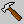

 Click the View Design Tools button in the View menu to display or hide the Design Tools Palette. This button functions as a "toggle." If the Design Tools Palette is currently visible, clicking the button will hide it. If the palette is hidden, clicking the button will display it.
You won't be able to show the Design Tools Palette while the Load Test Animation is in progress.